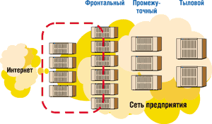
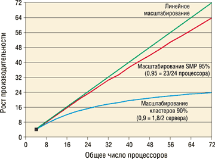
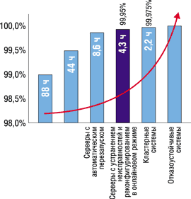

Олег Спиряев
В последнее время нередки утверждения, что серверы среднего и старшего класса активно заменяются на группы серверов начального уровня, объединенные в стойки или кластеры. Однако некоторые эксперты с этим не согласны. Так, по данным Dataquest, доля моделей ценой от 500 тыс. долл. и выше (к ним относятся средние и старшие серверы SMP) в общем объеме продаж серверов с 2000 до 2002 г. выросла с 38 до 52%.
Другие данные, полученные компанией IDC, свидетельствуют о росте (по крайней мере, по числу машин) в секторе младших моделей серверов - с двумя процессорами. IDC также предсказывает, что в 2005 г. самой распространенной операционной системой для серверов стоимостью от 50 тыс. до 3 млн долл. будет Unix. Из сравнения этих данных видно, что Unix-серверы среднего и старшего класса останутся преобладающей платформой для центров обработки данных, но будут дополняться все растущим числом небольших (обычно двухпроцессорных) серверов.
Эта тенденция сложилась в результате выделения в центрах обработки данных разных уровней вычислений (рис. 1). Уровень 1, или фронтальный уровень, постепенно переходит на модель горизонтального масштабирования небольших серверов, а на уровне 3 (уровне баз данных) преобладают серверы с вертикальным масштабированием. Уровень 2 (уровень приложений) становится областью, где сосуществуют вертикальная и горизонтальная архитектуры.
|  | Рис. 1. Уровни вычислений в центрах обработки данных.
|
Вертикальная и горизонтальная архитектуры
Рассмотрим основные различия между вертикальной и горизонтальной архитектурами. Серверы с вертикальным масштабированием - это большие SMP-системы (с симметричной многопроцессорной обработкой или совместно используемой памятью), насчитывающие свыше четырех центральных процессоров. В них используется только одна копия ОС, управляющая работой всех процессоров, памяти и компонентов ввода-вывода. Обычно все эти ресурсы размещены в одной стойке или шкафу. Межсоединения у таких серверов осуществляются по высокоскоростной центральной или объединительной панели с небольшим временем запаздывания и согласованным доступом к кэш-памяти. Добавить ресурсы можно путем установки внутрь шкафа дополнительных системных плат. В системах с вертикальной архитектурой (или SMP-системах) память используется совместно, т. е. все процессоры и компоненты ввода-вывода получают доступ ко всей памяти. Пользователь "видит" память как единый большой объект.
При альтернативном, горизонтальном масштабировании системы соединяются через сеть или объединяются в кластер. Для межсоединений обычно используются стандартные сетевые технологии, такие, как Fast Ethernet, Gigabit Ethernet (GBE) и Scalable Coherent Interconnect (SCI), дающие меньшую пропускную способность и большее запаздывание по сравнению с вертикальными системами. Ресурсы в этом случае распределяются между узлами, обычно содержащими от одного до четырех процессоров; каждый узел имеет собственный процессор и память и может иметь собственную подсистему ввода-вывода или использовать ее совместно с другими узлами. На каждом узле работает отдельная копия ОС. Ресурсы расширяются за счет добавления узлов, но не добавления ресурсов в узел. Память в горизонтальных системах распределена, т. е. у каждого узла есть собственная память, к которой напрямую обращаются его процессоры и подсистема ввода-вывода. Доступ к этим ресурсам с другого узла происходит намного медленнее, чем с узла, где они расположены. Кроме того, при горизонтальной архитектуре отсутствует согласованный доступ узлов к памяти, а используемые приложения потребляют относительно немного ресурсов, поэтому они "умещаются" на одном узле и им не нужен согласованный доступ. Если же приложению потребуется несколько узлов, то оно само должно обеспечить согласованный доступ к памяти.
Если горизонтальная система удовлетворяет требованиям приложений, то такая архитектура предпочтительна, поскольку расходы на ее приобретение меньше. Обычно стоимость приобретения в расчете на один процессор у горизонтальных систем ниже, чем у вертикальных. Разница в цене объясняется тем, что в вертикальных системах применяются более мощные функции надежности, доступности и обслуживаемости - RAS (reliability, availability, serviceability), а также высокопроизводительные межсоединения. Однако есть ряд ограничений на применение систем с горизонтальной архитектурой. Ниже мы обсудим, в каких условиях возможно применение горизонтальных систем и когда обязательно вертикальное масштабирование.
Помимо одного большого SMP-сервера, к вертикальной архитектуре относятся также кластеры больших SMP-серверов, используемые для одного крупномасштабного приложения.
Недавно появившиеся на рынке модульные, или blade-серверы, обычно оборудуемые одним-двумя процессорами, - пример горизонтальных серверов. Здесь кластер состоит из небольших узлов, в каждом из которых установлен SMP-сервер начального уровня с числом центральных процессоров от 1 до 4.
Другой способ горизонтального масштабирования - это большие вычислительные системы с массовым параллелизмом (MPP), состоящие из множества установленных в одном шкафу небольших процессоров, каждый из которых имеет собственную копию ОС или копию микроядра ОС. В настоящее время выпускаются всего несколько систем MPP, которые чаще всего представляют специализированные решения. Это, например, системы Terradata производства компании NCR, IBM RS/6000SP (SP-2) и HP Tandem non-stop.
Таблица 1. Особенности вертикальной и горизонтальной архитектур
| Параметр | Вертикальные системы | Горизонтальные системы |
| Память | Большая совместно используемая | Небольшая выделенная |
| Потоки | Много взаимозависимых потоков | Много независимых потоков |
| Межсоединения | Сильносвязанные внутренние | Слабосвязанные внешние |
| RAS | Мощные RAS одиночной системы | Мощные RAS с использованием репликации |
| Центральные процессоры | Много стандартных | Много стандартных |
| ОС | Одна копия ОС на множество центральных процессоров | Несколько копий ОС (по одной копии на 1-4 процессора) |
| Компоновка | В одном шкафу | Размещение большого числа серверов в стойке |
| Плотность размещения | Высокая плотность размещения процессоров на единицу площади пола | Высокая плотность размещения процессоров на единицу площади пола |
| Оборудование | Стандартное и специально разработанное | Стандартное |
| Масштабирование | В пределах корпуса одного сервера | В масштабе нескольких серверов |
| Расширение | Путем установки в сервер дополнительных компонентов | Путем добавления новых узлов |
| Архитектура | 64-разрядная | 32- и 64-разрядная |
Табл. 1 позволяет провести сравнительный анализ вертикальной и горизонтальной архитектур.
- В вертикальных системах память используется совместно и обеспечивается согласованный доступ к кэш-памяти.
- Вертикальные системы идеальны для потоков выполнения задач, которые должны обмениваться данными между собой.
- Вертикальные системы характеризуются мощными функциями RAS, а в горизонтальных системах доступность реализуется с помощью массивной репликации (в кластер соединяются несколько узлов, поэтому отказ одного из них мало влияет на работу всей системы).
- В вертикальных системах одна копия ОС охватывает все ресурсы. Некоторые вертикальные системы, например, мидфреймы и серверы класса high-end Sun Microsystems (от Sun Fire 4800 до Sun Fire 15K), можно разделить на меньшие вертикальные серверы.
- В вертикальных системах используется максимально возможное число стандартных компонентов, но некоторые основные составляющие (например, межсоединения) специально разрабатываются.
- Вертикальные системы можно расширять, устанавливая в существующий каркас дополнительные компоненты (более мощные процессоры, добавочную память, дополнительные и более производительные соединения ввода-вывода и т. п.). Горизонтальные системы расширяются за счет добавления узла или замены старых узлов на новые.
- Практически все вертикальные системы 64-разрядные, а горизонтальные могут быть как 32-разрядными, так и 64-разрядными.
Для одних типов приложений лучше подходят вертикальные системы, для других - горизонтальные, однако во многих случаях оптимальный выбор архитектуры зависит от размера задачи. В табл. 2 приведены примеры приложений, для которых оптимальна вертикальная либо горизонтальная архитектура.
Таблица 2. Типы приложений для вертикальной и горизонтальной архитектур
| Вертикальные системы | Горизонтальные системы |
|
|
Для небольших и модульных серверов хорошо подходят приложения, которые не используют информацию о состоянии, невелики по масштабу и легко реплицируются. А для приложений, использующих информацию о состоянии и большие объемы данных, требующих интенсивной передачи данных внутри системы, идеальным решением будут вертикальные серверы. На рынке высокопроизводительных технических вычислений (HPTC) имеется множество приложений, в которых потоки зависят друг от друга и обмениваются данными между собой. Существуют также приложения, которым нужны большие объемы совместно используемой памяти. Для этих двух типов приложений лучше всего подходят большие SMP-серверы. Однако имеются и такие приложения HPTC, в которых потоки исполнения независимы и им не требуется совместно используемая память большого объема. Такие приложения можно разбивать на разделы, и потому для их выполнения идеальны кластеры небольших серверов. Аналогичным образом некоторые коммерческие приложения поддерживают разделы, и для них оптимальны горизонтальные серверы, а другие нельзя разбить на разделы, поэтому для них лучшая платформа - это вертикальные серверы.
Факторы, влияющие на производительность
Все крупные центры обработки данных представляют собой параллельные компьютеры. Здесь даже кластеры можно рассматривать как особый тип параллельных систем. Для получения высокой производительности требуется сбалансированная система с мощными процессорами, работающими на высокой скорости межсоединениями и подсистемой ввода-вывода, масштабируемой ОС, оптимизированными приложениями и совершенными функциями RAS.
Процессоры и системные межсоединения
Процессоры, безусловно, существенный компонент, но они только отчасти определяют общую производительность системы. Более важно обеспечить работу процессоров с максимальной загрузкой. У мощного процессора, загруженного лишь на 50%, производительность будет хуже, чем у более медленного процессора, который загружен на 80%.
Кроме того, по мере роста числа процессоров в параллельной системе на первый план выходит не их мощность, а системные межсоединения. Именно они отвечают за перемещение данных с диска, из памяти и из сети к процессору. В кластере в качестве межсоединения выступает сетевое соединение, например, Fast Ethernet или Gigabit Ethernet. Кластерные межсоединения перемещают данные между узлами, а системные - внутри отдельной системы. Если межсоединение работает слишком медленно, то процессор в ожидании данных будет простаивать.
Системные межсоединения также используются для перемещения адресов данных, что необходимо для поддержки согласованного обращения к кэш-памяти. Если системное межсоединение слишком медленно передает адреса данных, то процессор опять-таки будет простаивать в ожидании данных, поскольку для доступа к ним ему нужно знать их адрес. Быстрые межсоединения обеспечивают высокую пропускную способность и низкое запаздывание (малое время, проходящее от момента запроса на данные до начала передачи данных).
Основное техническое различие между горизонтальными и вертикальными системами - это пропускная способность и запаздывание их межсоединений. У межсоединений кластеров пропускная способность может составлять от 125 Мбайт/с для Fast Ethernet до 200 Мбайт/с для SCI, а запаздывание - от 100 тыс. нс для GBE и до 10 тыс. нс для SCI. С помощью интерфейса InfiniBand возможно реализовать более быстрые межсоединения с пиковой скоростью от примерно 250 Мбайт/с для первой версии и до 3 Гбайт/с для последующих.
Ввод и вывод
Быстрый ввод-вывод необходим для того, чтобы межсоединение могло быстро получить данные с диска и из сети и передать их процессорам. Узкое место в подсистеме ввода-вывода может отрицательно сказаться на работе даже самых быстрых межсоединений и процессоров.
Операционная система
Даже лучшее оборудование оказывается неэффективным, если ОС недостаточно масштабируема. Для горизонтальных систем масштабируемость ОС не столь важна, потому что в отдельном узле или с отдельной копией ОС работает не более четырех процессоров.
Доступность системы
Вообще говоря, доступность системы во многом зависит от типа архитектуры. В больших SMP-системах функции RAS встроены в систему и дополнены переключением при отказах для двух-четырех узлов. В горизонтальных системах RAS отдельных узлов хуже, но улучшение этих функций достигается многократной репликацией узлов.
Оптимизированные приложения
Приложения необходимо оптимизировать для архитектуры вычислительной системы. Легче всего писать и оптимизировать приложения для SMP-систем. Основные коммерческие приложения оптимизированы именно для SMP-систем и даже разрабатывались на них, поэтому SMP доминируют на рынке систем среднего класса и high-end последние десять лет.
Размер приложений
Как уже отмечалось, в больших SMP-системах используются высокоскоростные межсоединения, обеспечивающие достаточную производительность системы. В горизонтальных системах могут возникать проблемы с производительностью из-за низкой пропускной способности и значительной задержки межсоединений в тех случаях, когда требуется часто передавать данные между узлами. Однако некоторым приложениям для достижения высокой производительности не нужна высокая скорость межсоединений - обычно это небольшие приложения и приложения, которые можно легко реплицировать (например, Web-серверы, прокси-серверы, брандмауэры и небольшие серверы приложений). В таких горизонтальных системах каждый узел выполняет небольшую задачу независимо от работы всех остальных.
Например, в случае горизонтальной архитектуры (или архитектуры с распределенной памятью) четыре процессорных узла (каждый с отдельным ОЗУ и выделенной либо используемой совместно подсистемой ввода-вывода) могут использовать сетевое межсоединение, например, Gigabit Ethernet. В этой вычислительной среде выполняются рабочие нагрузки трех типов. Самая маленькая нагрузка помещается на одном узле, но по мере ее увеличения для выполнения требуется уже несколько узлов. Как утверждают специалисты, при выполнении одной задачи на нескольких узлах производительность значительно ухудшается из-за медленных межузловых межсоединений. Небольшие нагрузки, которым не нужно обмениваться данными между собой, прекрасно сочетаются с горизонтальной архитектурой, но при выполнении в ней крупномасштабных нагрузок возникают проблемы.
Конфигурация большой системы SMP может включать, например, до 100 процессоров, 576 Гбайт совместно используемой памяти и высокоскоростные межсоединения. Такая система может обрабатывать все типы нагрузок, поскольку в ней отсутствует обмен данными между узлами и эффективно осуществляется обмен данными между процессами. Все центральные процессоры могут одновременно получить доступ ко всем дискам, всей памяти и сетевым соединениям - это ключевая особенность SMP-систем (или вертикальных систем).
Часто возникает вопрос о целесообразности размещения на больших SMP малых нагрузок. Хотя в техническом плане это возможно, с экономической точки зрения такой подход себя не оправдывает. Для больших SMP стоимость приобретения в расчете на один процессор выше, чем для маленьких систем. Поэтому если приложение может работать на небольшом узле (или нескольких небольших узлах) и это не создает серьезных проблем с управлением, для его развертывания лучше подходит горизонтальное масштабирование. Но если приложение слишком велико и не может выполняться на небольшом узле (или нескольких таких узлах), то крупный SMP-сервер будет оптимальным вариантом с точки зрения как производительности, так и системного администрирования.
Производительность на уровне базы данных
Основной вопрос здесь - сравнение производительности одиночных средних и больших SMP-серверов с кластером небольших серверов (не более четырех процессоров).
При обсуждении масштабируемости фирмы-производители используют ряд специальных терминов. Так, рост производительности (Speedup) для SMP определяется как отношение скоростей выполнения приложения на нескольких процессорах и на одном. Линейный рост производительности (Linear speedup) означает, например, что на 40 процессорах приложение работает в 40 раз (40x) быстрее, чем на одном. Рост производительности не зависит от числа процессоров, т. е. для конфигурации из 24 процессоров он будет таким же, как для 48 процессоров. Рост производительности кластера (Cluster speedup) отличается только тем, что при его расчете берется число узлов, а не процессоров. Как и рост производительности SMP, рост производительности кластера остается постоянным для разного числа узлов.
Эффективность масштабирования (Scaling efficiency) характеризует способность приложений, особенно кластерных, масштабироваться на большое число узлов. Обычно считается, что эффективность масштабирования зависит от числа узлов, участвующих в измерении. Эффективность масштабирования SMP (SMP scaling efficiency) - это рост производительности, деленный на число процессоров, а эффективность кластера (Cluster efficiency) - это рост производительности кластера, деленный на число узлов в нем. Нужно понимать, в чем смысл этих параметров, чтобы не складывалась неправильная картина, поскольку эффективность масштабирования 90% на двух узлах - это не то же самое, что эффективность масштабирования 90% на четырех узлах.
На рис. 2 приведены три графика: идеальная линейная масштабируемость, масштабируемость 24-процессорного SMP-сервера в 95% и масштабируемость кластера из двух 4-процессорных серверов в 90%. Видно, что существуют определенные ограничения на масштабируемость баз данных в кластерах (при горизонтальном масштабировании). Соединяя вместе много маленьких серверов, не удается получить масштабируемость, необходимую для средних и крупных приложений. Причина этого - ограничения пропускной способности внутрикластерных межсоединений, дополнительная нагрузка на ПО баз данных, связанная с управлением кластером, и трудности написания приложений для кластерных сред с распределенной памятью.
|  | Рис. 2. Показатели масштабируемости.
|
Опубликованные результаты эталонных тестов показывают, например, что у Oracle9i RAC (Real Application Cluster) рост производительности составляет 1,8 и эффективность масштабирования равна 90%. Такая эффективность масштабируемости может показаться достаточно высокой, но на самом деле масштабируемость 90% для четырех узлов оказывается неэффективной, если сравнить ее с результатами больших SMP-серверов.
Производительность на уровне приложений
Уровень приложений в трехуровневом центре обработки данных сильно отличается от уровня базы данных. Обычно приложения этого уровня работают без запоминания состояния - иными словами, на самом сервере данные не хранятся или хранится только их небольшая часть. Этот уровень содержит бизнес-правила для сервисов приложений. Транзакции приходят на уровень приложений и им же обрабатываются. Когда данные нужно записать или считать, транзакции передаются на уровень базы данных. Серверы приложений стремятся консолидировать соединения с базой данных, поскольку большое число соединений отрицательно влияет на производительность.
В большинстве случаев уровню сервера приложений требуется намного больше процессоров, чем уровню базы данных в расчете на отдельный прикладной сервис. Например, в случае SAP R/3 это соотношение составляет примерно 10 процессоров на каждый процессор базы данных, т. е. если SAP R/3 требуется 20 процессоров для уровня базы данных, то на уровне приложений должно быть примерно 200 процессоров. Вопрос заключается в том, что выгоднее развернуть - 100 двухпроцессорных серверов или десять 20-процессорных. Аналогичным образом в Oracle соотношение процессоров приложений к процессорам баз данных равно примерно 5 к 1.
Считается, что серверы приложений не требуется распределять по нескольким узлам. Несколько копий прикладного ПО можно распределить по разным физическим серверам разной мощности или по динамическим доменам больших серверов.
Число процессоров, требуемых для уровня приложений, будет примерно одинаково независимо от архитектуры компьютеров. Затраты на приобретение оборудования и ПО для горизонтальной архитектуры будут меньше, поскольку стоимость в расчете на один процессор в этом случае меньше. В большинстве случаев горизонтальные системы способны обеспечить производительность, необходимую для выполнения соглашения об уровне сервиса. Затраты, связанные с приобретением лицензий на ПО, для обеих архитектур примерно одинаковы.
В то же время расходы на управление и обслуживание инфраструктуры у горизонтальной архитектуры могут оказаться более высокими. При развертывании на горизонтальных системах используются многочисленные копии ОС и ПО серверов приложений. Затраты же на поддержание инфраструктуры обычно растут пропорционально числу копий ОС и приложений. Кроме того, для горизонтальной архитектуры резервное копирование и восстановление после аварий становится децентрализованным, и управлять сетевой инфраструктурой сложнее.
Стоимость системного администрирования с трудом поддается измерениям. Обычно модели для сравнения горизонтального и вертикального развертывания прикладных серверов показывают, что управление меньшим числом более мощных серверов (вертикальных серверов) обходится дешевле, чем управление множеством небольших серверов. В целом при выборе типа архитектуры для развертывания уровня приложений ИТ-менеджеры должны детально проанализировать стоимость приобретения оборудования.
Влияние архитектуры на доступность
Доступность крайне важна для современных центров обработки данных - сервисы приложений должны быть доступны в режиме 24x7x365 (24 часа в сутки, 7 дней в неделю, 365 дней в году). В зависимости от потребностей конкретного центра обработки данных используются разные схемы обеспечения высокой доступности. Для выбора конкретного решения необходимо определить допустимое время простоев (запланированных и незапланированных). На рис. 3 показано, как процент доступности отражается на продолжительности простоев.
|  | Рис. 3. Доступность и продолжительность простоев для разных типов систем.
|
По мере роста требований к доступности растет и стоимость решения. Менеджеры центров обработки данных должны определить, какое сочетание стоимости, сложности и доступности наилучшим образом соответствует требованиям к уровню сервиса. Центры обработки данных, которым нужна доступность примерно 99,95%, могут развернуть одиночный SMP-сервер с такими функциями RAS, как полное резервирование аппаратуры и обслуживание в онлайновом режиме.
Однако для достижения доступности выше 99,95% потребуется кластер. ПО Sun Cluster с переключением при отказе HA (High Availability - высокой доступности) обеспечивает доступность 99,975%. Переключение при отказе HA использует основной сервер и находящийся в горячем резерве; при отказе основного сервера резервный берет на себя его нагрузку. Время перезапуска сервиса зависит от приложений и может занять несколько минут, особенно в случае приложений баз данных, которым для восстановления транзакций требуется откат с обработкой большого объема данных.
Если простои в несколько минут недопустимы для центра обработки данных, то решением может стать система типа "активный-активный", где приложение развертывается на двух или нескольких узлах: если один из них выйдет из строя, то остальные продолжат выполнение приложения. В результате перебой будет очень коротким (некоторые клиенты сообщают, что он продолжается менее 1 мин), иногда пользователь может даже не заметить отказа узла.
Вертикальные серверы обеспечивают высокую доступность за счет встраивания многих функций RAS в отдельный сервер для сокращения до минимума запланированных и незапланированных простоев. В горизонтальных серверах функции, обеспечивающие высокий уровень RAS, реализуются не на уровне отдельного сервера, а за счет дублирования и размещения нескольких серверов. Из-за разной реализации функций RAS и межсоединений горизонтальные серверы обычно дешевле в расчете на один процессор.
Для трехуровневой архитектуры хорошим примером горизонтальной высокой доступности служит развертывание Web-серверов. Можно развернуть много небольших серверов, на каждом из которых будет установлена отдельная копия ПО Web-сервера. Если один Web-сервер выйдет из строя, его транзакции перераспределяются между остальными работоспособными серверами. В случае серверов приложений они могут размещаться как на горизонтальных, так и на вертикальных серверах, и высокая доступность реализуется с помощью дублирования. Независимо от того, развертывается ли несколько крупных SMP-серверов или много небольших, дублирование остается основным способом обеспечения высокого RAS на уровне приложений.
Однако для уровня баз данных ситуация меняется. Базы данных сохраняют состояние и по своей природе требуют в большинстве случаев разделения данных и возможности доступа к ним со всех процессоров/узлов. Это означает, что для высокой доступности с помощью дублирования нужно использовать такое ПО кластеризации, как Sun Cluster или Oracle9i RAC (для очень высокой доступности).
Выводы
Как у вертикальной, так и у горизонтальной архитектуры есть своя ниша в сегодняшнем центре обработки данных. Хотя сегодня основное внимание сосредоточено на таких новых технологиях, как модульные серверы и параллельные базы данных, на рынке сохраняется высокий спрос на серверы среднего класса и класса high-end.
Вертикальные и горизонтальные системы могут использовать одно и то же ПО, ОС и даже одинаковые процессоры. Основное различие, которое сказывается на цене и производительности, это межсоединения, используемые в той и в другой архитектуре. Горизонтальные серверы используют слабосвязанные внешние межсоединения, а вертикальные серверы - сильносвязанные межсоединения, обеспечивающие более высокую скорость передачи данных.
Для фронтального уровня горизонтальные серверы обычно предоставляют оптимальное решение с точки зрения производительности, совокупной стоимости приобретения и доступности. Для уровня приложений можно эффективно использовать как вертикальную, так и горизонтальную архитектуру. Для уровня баз данных оптимальным решением будет использование вертикальных серверов, независимо от требуемого уровня доступности.